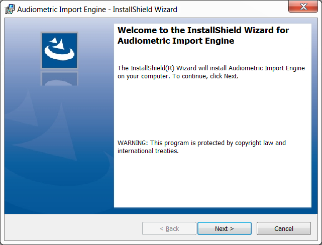
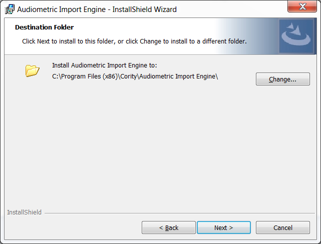
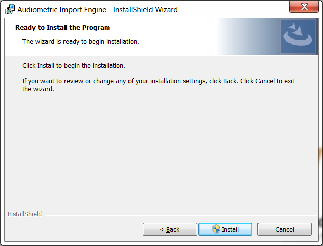
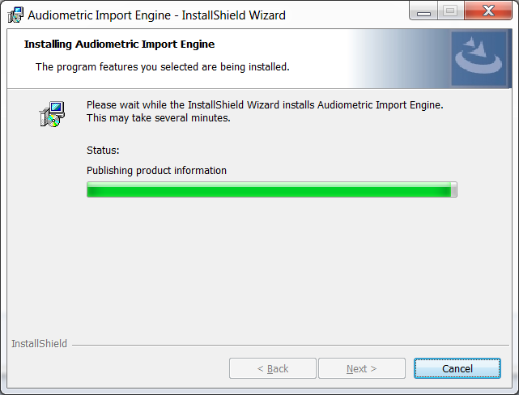
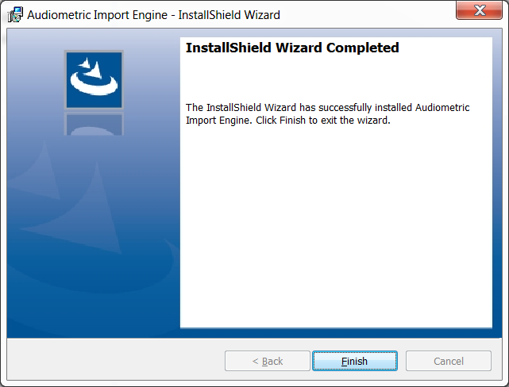
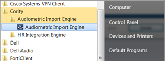
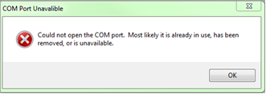
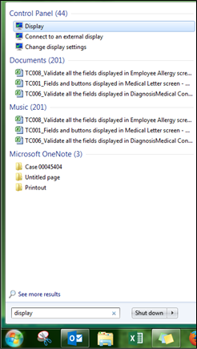

The Device Import Engines are standalone utilities that allow users to import test result records directly from a device or its software.
Note: The following instructions provide images from the workflow for installing the Audio Import Engine. The workflow for installing the Spirometric Import Engine and the Vision Import Engine are the same.
To install a Device Import Engine:
If you have installed any previous version(s) of any of the Cority Device Import Engines, uninstall the older version(s) before proceeding with this new installation.
Install Microsoft .NET Framework 4.5.2. The download and instructions are available from the Microsoft website.
Extract the Cority zip file or the Device Import Engine zip file and locate the Cority Device Import Engines folder.
Open the folder and run setup by double-clicking the appropriate file (Audiometric Import Engine Setup.msi to install the Audio Import Engine, Spirometric Import Engine Setup.msi to install the Spirometric Import Engine, or Vision Import Engine Setup.msi to install the Vision Import Engine). The InstallShield Wizard will open.
Note: Some organizations have security policies that prevent users from installing applications without prior approval from the I.T. department. As a result, some users might not have the local administrator privileges necessary to install the application.
Click Next.

To use the default location (C:\Program Files (x86)\Cority), proceed to the next step. To change the location, click Change and select an alternative folder.

Click Next.
To proceed with the installation, click Install.

Note: After you click Install, if you are presented with a flashing Install Shield at the bottom of your screen, select it to authorize the installation. If not, proceed to the next step.
Click OK. The Import Engine installation will begin. Note: This process may take several minutes.

When the installation is complete, click Finish to exit the InstallShield Wizard.

After the program has finished installing, you will need to restart your computer. Once you have restarted your computer, the program will appear in your Windows > Start Menu > Cority folder.

Click the program name to open it. Note: When opening the Device Import Engine on a laptop or PC that does not have a Communication Port, the following message will appear.

In that event, click OK to open the Device Import Engine.
When the application opens, if the settings section of the interface is not entirely visible, adjust the computer’s display to the default setting of 100%. To do this, in the search bar of the Start Menu enter “display” and then on the Control Panel click Display. The Control Panel Display window will open.

Select the Smaller - 100% (default) size, and then re-open the Device Import Engine to access its settings.